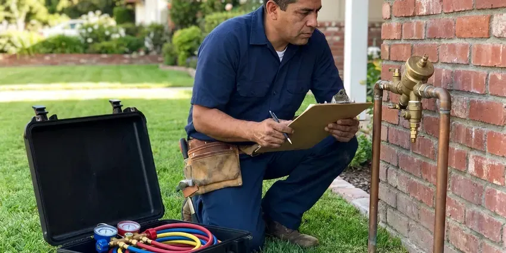

Rooter Services in Lander, WY
Roots, grease or a wad of wipes? Our Lander, WY crews cut lines back to the pipe wall and flow test before they leave.
- Fast Drain Clearing
- Cable Sized to Your Pipe
- Price Before We Start
- Hydro Jetting Available

Get Your Line Rooted Clean in Lander, WY.
Kitchen line, toilet or main sewer, we bring the cable and cutter that fit the pipe and clear it on the first trip.
Heavy-Duty Rooter Services for Drains and Sewers in Lander, WY
JKV Plumbing uses motorized augers and hydro jetting to clear the clogs plungers and store snakes leave behind. Grease and roots cause most of it. Our Lander, WY technicians pick the cutter for the pipe material, which keeps aging clay and cast iron from getting chipped or cracked.
Our expertise includes:
- Sewer camera checks to see the problem
- Sewer Lateral Root Removal
- Root cutting and regrowth treatment

Additional Plumbing Maintenance Services in Lander, WY
Our maintenance and specialty plumbing services in Lander, WY catch small problems before they become emergencies.


Customers
Why Choose JKV Plumbing for Rooter Services in Lander, WY?
We carry cameras and locators on every rooter truck. With them we can mark the clog's depth and distance from the cleanout before anyone talks about digging. Most jobs never need a shovel.
- Right Cutter, Cutters are picked to fit pipe size and material, which protects older clay and cast iron.
- Pipe Protection, Rental machines kink and gouge. We run the cable at the right speed so the pipe comes through intact.
- Preventive Advice, We tell you what we found on the cable so you can avoid the next stoppage.
Citywide Coverage
Tree-lined older streets and brand new developments both get service from us across Lander. We work in homes and businesses alike. Each kind of building has its own drain layout, and our crews know where to look for the cleanout on most of them.
Experienced Team
Our JKV Plumbing team knows Wyoming common drain materials and how each one fails. Orangeburg pipe, old cast iron and clay all show up on older lots. A camera shows which one you have. The pipe material decides the cutter and tells us if the line is worth cleaning or due for replacement.
Safety-First Approach
Sewage carries bacteria, so our crews wear proper protective gear on every backup. Contaminated debris goes into sealed bags. Drop cloths go from the door to the drain, and anything we touch gets wiped with disinfectant.
Trusted Certified Lander Plumbing Services Professionals
At JKV Plumbing, we take pride in licensed, certified plumbing services throughout Lander, WY. Credentials matter in this trade. Our plumbers hold recognized industry credentials, and they follow strict safety and quality rules on every repair, installation and maintenance call we run.
Call Us Now PHCC Plumbing Contractor Recognition
PHCC Plumbing Contractor Recognition Better Business Bureau (BBB) Accreditation
Better Business Bureau (BBB) Accreditation Angi Certified Pro
Angi Certified Pro ISO 9001 Quality Management Certification
ISO 9001 Quality Management CertificationHeavy-Duty Rooter Services in Lander, WY
Scheduled Drain Maintenance in Lander, WY
Some lines need cutting on a calendar. A house with a big oak near the sewer might need rooting every 12 to 18 months. JKV Plumbing can put your Lander, WY property on a schedule and send a reminder when the next visit comes up. Cutting a line before it stops costs less than an after-hours backup and spares you the cleanup.

Rooting vs. Pipe Repair in Lander, WY
Rooting makes sense when the pipe is sound and just clogged. If roots come back within a few months, or the cable keeps catching on a broken hub, a repair starts to pay for itself. The camera settles it. Rooting usually runs a few hundred dollars, and lining or replacing a section costs more up front and stops the repeat visits.
Emergency Rooter Services in Lander, WY
Sewage in a floor drain on a Saturday night does not wait for Monday. JKV Plumbing takes emergency rooter calls in Lander, WY and sends a truck loaded with cable, cutters and a jetter. We usually clear the line in one trip. If sewage got onto flooring, we help contain it and give you names of cleanup crews.
Floor Drain Rooter in Lander
Basement and laundry floor drains in Lander fill with lint, sand and sump discharge grit. A plugged floor drain turns a small leak into standing water. We clear them with a 1/2 inch cable and check the trap primer if your drain has one, since a dry trap lets sewer gas in. Lint from the washer is the usual cause.
Video Camera Drain Inspection in Lander
A camera on a push rod shows the inside of the pipe in real time. For a line that keeps plugging, it ends the guesswork fast. We can see roots at a joint, a dropped toy, a cracked hub or a belly where water sits and drops its solids. You can watch the screen alongside the tech.
Camera Inspection for Rooter Services in Lander, WY
On a hard or repeat clog, JKV Plumbing sends a camera down after the cable. The monitor shows distance from the cleanout and, with a locator, the depth at that spot. No more guessing. If the pipe is broken, you know exactly where, so any repair in Lander, WY is one small dig rather than a trench across the yard.
Kitchen Line Rooter Service in Lander, WY
Kitchen lines clog slowly, over months, with grease, soap and food scraps that cool and harden on the pipe wall. We go in through the trap or a cleanout with a medium cable and spiral cutter. Heavy grease gets a jetting pass. Washing the walls with water keeps the drain running far longer than a cable can on its own.

Tree Root Removal in Lander
Hair-fine roots slip into a sewer joint and swell into a mat that catches paper and grease. Older Lander streets with big shade trees see this the most. We run a root saw head that cuts the mass back to the pipe wall, not just a channel through the middle. Roots grow back. Lining or replacing the bad section is the permanent fix, and we will tell you if your line is a candidate.
Local Rooter Crews Near Me in Lander, WY
Local technicians know which Lander streets have older clay sewers under heavy tree cover, and which newer tracts were plumbed in PVC. That knowledge lets us bring the right cutter the first time. Scheduling repeat maintenance is simple.
Our rooter trucks are based nearby, so we can respond fast when drains back up. Each one carries cable, cutters and jetting gear. That setup means most lines in Lander get cleared in a single trip, with no return visit for heavier equipment.
JKV Plumbing at a Glance
- Licensed and insured plumbers serving Lander, WY
- Same-day appointments and 24/7 emergency response
- Clear written estimates, no hidden fees
- 4.9-star rated by 782+ Wyoming customers
Lander Map
Lander Information
- Population
- 7,615
- Area codes
- Local
- Service area
- Lander and towns within a 40 mile drive
- Nearby
- Riverton, Rock Springs, Green River, Rawlins
A mature shade tree can send hair-fine roots through a joint gap and fill a 4 inch sewer in a couple of seasons, which is why periodic root cutting keeps Lander drains moving.
Talk to a Plumber
Reach out to JKV Plumbing for honest, reliable plumbing from people who know the trade in Lander, WY.
Our Specialized Plumbing Services in Lander, WY
At JKV Plumbing, you get every kind of plumbing service from one company across Lander, WY. We go from leak detection all the way to full system installations, for homes and commercial buildings, and we do it quickly at a fair price. Explore our core services below:


What to Expect From Rooter Work in Lander, WY
Here is what happens when you call us for rooter service.
Schedule
Call (307) 393-4049 to book rooter service. Our dispatcher asks a few questions about the problem and sends a tech to your Lander property.
Assess
The tech checks which fixtures are affected and may run a camera to find the cause and the exact spot of the clog.
Clear It
Using drum or sectional augers, or a jetter, we clear the line to full diameter and restore normal flow.
Frequently Asked Questions About Rooter Services in Lander
A single clogged sink or tub in Lander, WY usually runs $200 to $350. Root-filled mains and jobs that need jetting usually fall in the $400 to $1,000 range. Access matters too. A clean outdoor cleanout keeps the price down, while pulling a toilet or working through a roof vent adds time. You get the number before we start.
Plan on 1 to 3 hours for a single clogged drain. A root-choked main or a long jetting job may take 3 to 6 hours. We tell you up front. Once the tech sees the cleanout and asks which fixtures are slow, they can give you a closer estimate of how long it will run.
Slow drains, gurgling pipes and sewer smell are the early ones. If the tub fills when the toilet flushes, the main is blocked. Do not wait on that one. Several fixtures acting up at once almost always points to a main line clog rather than a single trap under one sink.
Not when the right cable and cutter are used at the right speed. Any cleaning tool can make cracked, crushed or rotted pipe worse. That is where a camera helps. With older pipe that has given trouble before, we usually film it first to see what we are working with.
It can be, so we prepare for it. We lay cloths from the entry to the drain and keep buckets and rags at the cleanout. The cable comes back dirty. It gets wiped as it comes out, and debris goes into bags before we clean up and leave.
Yes. Evenings, weekends and holidays are covered for urgent backups. You hear the after-hours rate before anything starts.
We run RIDGID, Spartan and Gorlitz augers, plus sewer cameras and jetters from the same tier of commercial makers. These machines take daily abuse and keep working. Brand matters less than setup. A good machine with the wrong cutter can still damage a pipe, so we spend as much care picking the head as we do the machine.
Most rooter jobs include a limited guarantee for a set number of days. If the line clogs again within that time, we return at no extra charge.
Hear From Customers Who Hired Our Plumbing Experts

Rachel N.
Hard water was leaving white crust on every faucet and our dishwasher was struggling. The tech tested the water, recommended a softener sized for a family of five, and installed it with a bypass valve in one afternoon. The spots on our glasses are gone.
Water Softener · Riverton, WY
Karen W.
After our third pinhole leak in copper, we stopped patching. JKV Plumbing gave us a written plan room by room and repiped the house in PEX while we stayed in it. The crew covered our floors every morning and cleaned up every night.
Repiping · Riverton, WY
Mark T.
The floor drain in our office break room backed up every few weeks. The plumber ran a cable, then put a camera down and found roots at a joint about thirty feet out. Seeing it on the screen made the decision easy.
Drain Cleaning · Jackson, WYBrian W.
I smelled gas behind the dryer and called right away. The plumber found a corroded flex connector, replaced it, and pressure tested the whole line before turning the gas back on. He let me watch the gauge hold steady for fifteen minutes.
Gas Line Repair · Jackson, WYLisa C.
Water was pouring out from under the washing machine on a holiday weekend. JKV Plumbing talked me through closing the valves over the phone and had a plumber at the house within ninety minutes. It was a burst fill hose.
Emergency Plumbing · Cody, WY
Marcus H.
Grease from the fryer line kept clogging the kitchen drain at my diner. JKV Plumbing hydro jetted the line after closing, showed me the buildup on camera, and set us up on a quarterly cleaning so it does not catch us on a Friday again.
Drain Cleaning · Lander, WY